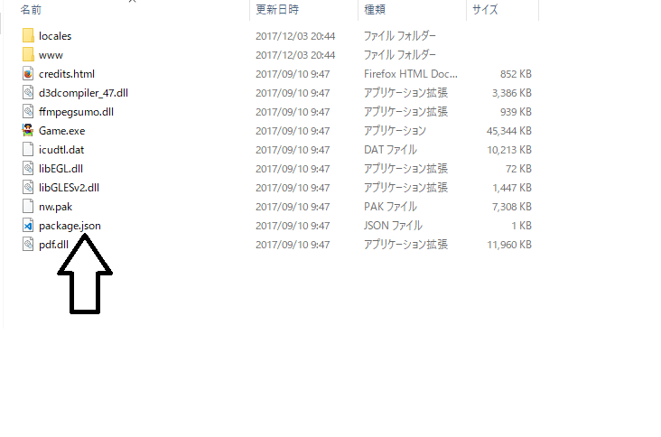
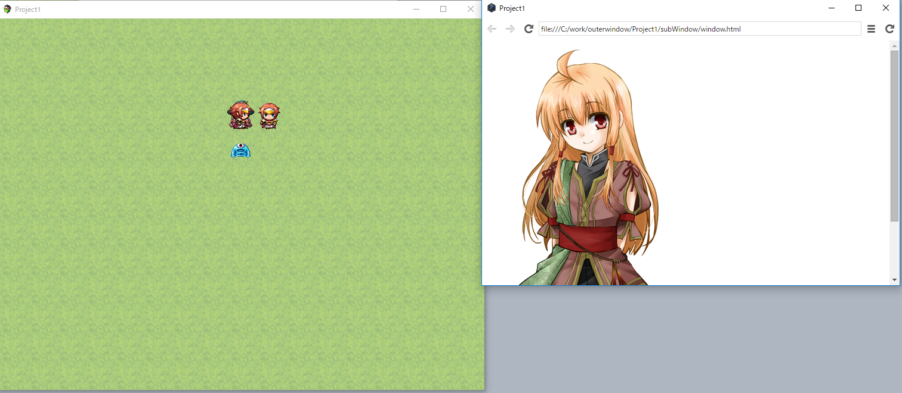

ゲーム画面外演出を考える
この記事はRPGツクールMV Advent Calendar7日目の記事です。
この記事に書かれている内容はツクール1.5.1でのみ動作します。それ以降には対応していません。1.6以上ではnw.jsのバージョンが変わるため動作しません。
概要
ゲーム画面（ウィンドウ）の外にピクチャを表示したりして、ゲーム画面外で演出をする方法を考えます。
結論から言うと、かなり面倒くさくてつらく、内容は開発者向けです。少なくともhtmlの知識は必要です。
とりあえず、Windows/Mac 向けを考えます。ブラウザ版では別の考え方をします（後述）。
最後に完成版のプロジェクトファイルを用意するので必要であれば参照してみてください。
ゲーム画面外にキャラが表示されると何割か増しでかわいく見える気がする。
※今回はデュアルディスプレイ環境は考慮しません
フルスクリーンを無効化する
少しずつ実装していきましょう。
まず、ゲーム画面外に出すということは、フルスクリーン時には効果ありません。なのでフルスクリーンにする機能をOFFにします。
ツクールの機能にあるF4キーでフルスクリーンにする機能はプラグインでOFFにできるのですが、ウィンドウの端っこにカーソルを持っていったときに表示されるリサイズや右上の最大化ボタンをプラグインからOFFにすることができません。
これを無効化するにはデプロイ後にpackage.jsonというファイルの中身を書き換える必要があります

packages.jsonの中身のwindowの箇所に "resizable": false, を以下のように追加します。
"window": {
"resizable": false,
"title": "",
"toolbar": false,
"width": 816,
"height": 624,
"icon": "www/icon/icon.png"
}
これでフルスクリーンをOFFにできます。しかし、これはデプロイする度に該当箇所を書き換えないといけないので、かなりつらいです。
とりあえず表示してみる
ゲーム画面外に影響させるにはもう1個別のウィンドウを作るしかありません。
nw.js の機能を使って実装していきます。
nw.jsのWindowには openというURLやhtmlファイルを開く機能があり、それを使います。
つまり、imgタグを記述したhtmlファイルを用意すれば、画像が表示されるウィンドウが用意できますね。
MVのプロジェクト直下にsubWindowフォルダを作り、そこにwindow.htmlとして以下のようなhtmlを用意しておきます。
<!DOCTYPE html>
<html>
<head>
<meta charset="UTF-8">
<title>Project1</title>
</head>
<body style="background-color:rgba(0,0,0,0);">
<img src="../img/pictures/p-stella01.png">
</body>
</html>
そしてツクール側からスクリプトコマンドで以下のようにすると、ウィンドウが表示されます
var gui = window.require('nw.gui');
gui.Window.open("subWindow/window.html");

いらないウィンドウの装飾とか透明じゃないとかあるけど、とりあえず表示できました。
これでわかるように、htmlならなんでもいいのです。ブラウザデプロイしたMV製のゲームでも……。
ウィンドウの表示をちゃんとする
Window.openの引数にマニフェストを渡せるのでこれで制御できます。
var gui = window.require('nw.gui');
gui.Window.open("subWindow/window.html",{
resizable: false, //最大化、リサイズ不可
toolbar: false, //ツールバー非表示
frame: false, //フレーム非表示
show_in_taskbar: false, // タスクバーに表示しない（注意：開発時はtrueにしておいたほうがいい。タスクバーに表示されないとウィンドウが迷子になる）
transparent: true //透明化
});
ちなみに透明化ですが、Vista以降でclassic themeでないことが条件です。
ゲーム画面とサブウィンドウを関連付ける
ゲーム画面を動かしたらそれに追従してサブウィンドウも移動してほしいですし、ゲーム画面を閉じたらサブウィンドウも閉じるべきです。
まずは、閉じる同期をします。
var gui = window.require('nw.gui');
var win = gui.Window.get(); //ゲーム画面側のウィンドウを取る
var subWin = gui.Window.open("subWindow/window.html",{
//省略
});
//ゲーム画面の閉じるイベント時にサブウィンドウも閉じるようにフック
win.on('closed', function() {
subWin.close();
});
次にウィンドウ移動の追従です。上記ソースコードの流れで
win.on("move", function(x, y){
subWin.x = x + win.width; //例えば、ゲーム画面の右側に貼り付ける
subWin.y = y;
});
大雑把に断片ごとに書きましたがこんな感じです。
画像をアニメーションさせる
ゲーム画面外の画像をモニタ左端からゲーム画面に近づくというアニメーションを考えます。
恐らく２つ方法があります。
- サブウィンドウのx座標をモニタ左端からゲーム画面まで動かしていく
- サブウィンドウを大きめに取り、サブウィンドウ内のimgタグを左端からゲーム画面まで動かしていく
1は失敗でした。ウィンドウのx座標を動かすとすごいカクカクするのです。アニメーションするのに耐えられないです。
2で攻めるしかないです。2はツクールとは関係なく、html、css、js使ってアニメーションを実装すればいいので、ここでは割愛。
こんな感じですね。
ブラウザ版を考える
ブラウザ版はnw.js のウィンドウに出力していたものをそのままiframeに出力すれば良いですね。
これで同じスクリプトコマンドで両方対応できます。
技術的な補足
nw.jsのWindowにはsetResizableというメソッドがあり、これでフルスクリーンをOn/Offできそうなのですが、効きませんでした。
manifestで show: false とするとウィンドウを非表示状態でopenできます。
これを利用してwindowがloadされたあと、showすれば描画前のちらつきをなくせる気がするのですが、なぜかtransparentが効いたwindowでやるとちゃんと描画されなかったのであきらめました。